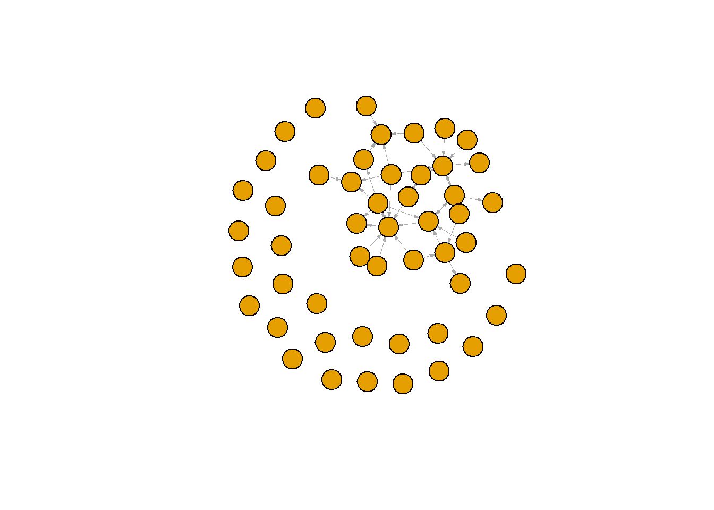
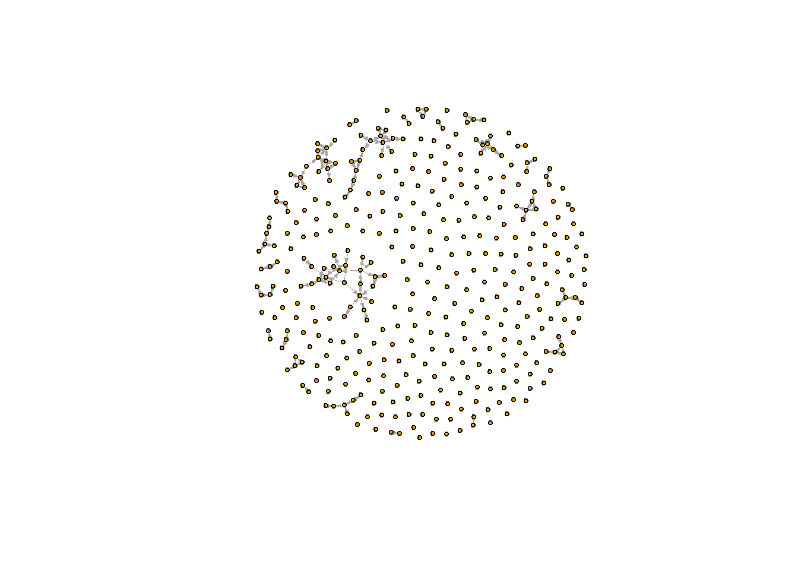
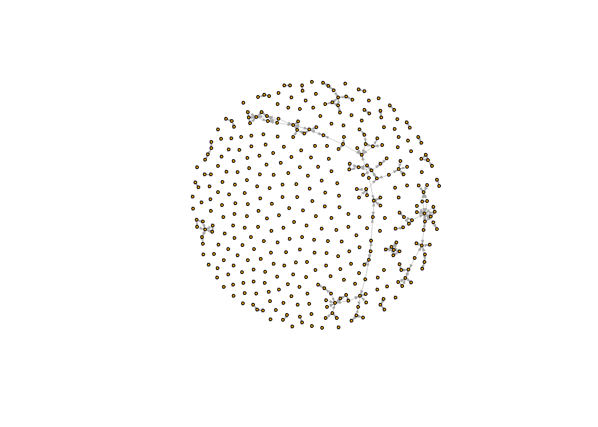
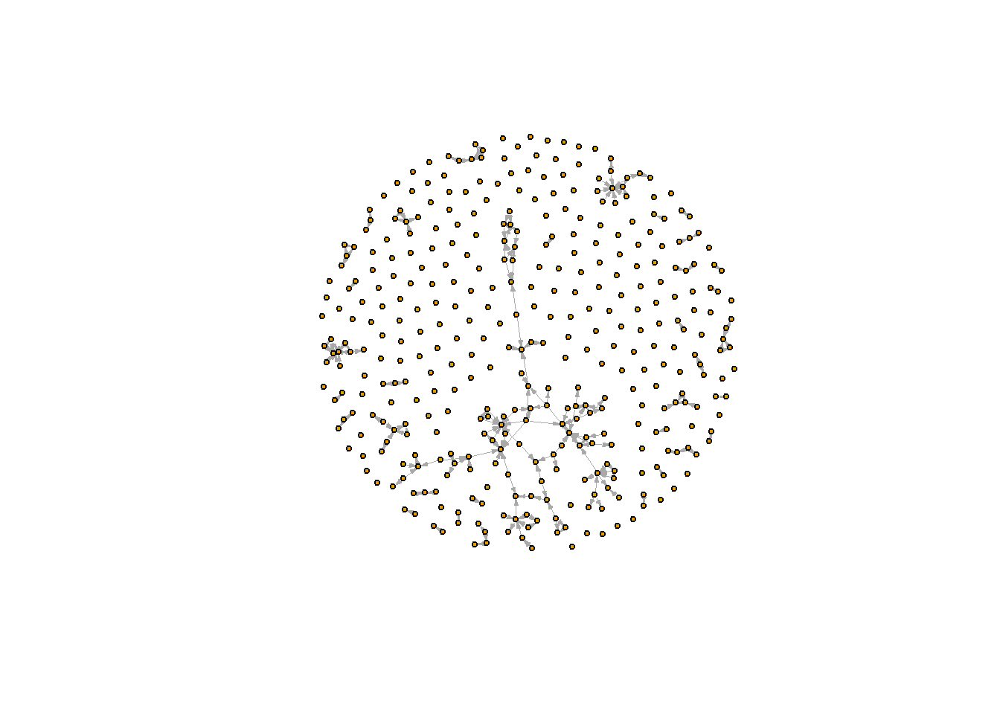
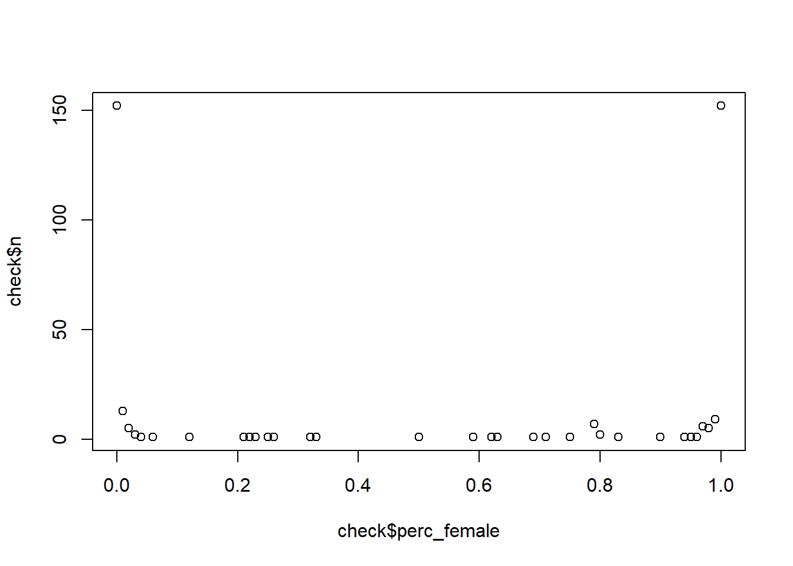

rm(list = ls())
fpackage.check <- function(packages) {
lapply(packages, FUN = function(x) {
if (!require(x, character.only = TRUE)) {
install.packages(x, dependencies = TRUE)
library(x, character.only = TRUE)
}
})
}
fsave <- function(x, file = NULL, location = "./data/processed/") {
ifelse(!dir.exists("data"), dir.create("data"), FALSE)
ifelse(!dir.exists("data/processed"), dir.create("data/processed"), FALSE)
if (is.null(file))
file = deparse(substitute(x))
datename <- substr(gsub("[:-]", "", Sys.time()), 1, 8)
totalname <- paste(location, file, "_", datename, ".rda", sep = "")
save(x, file = totalname) #need to fix if file is reloaded as input name, not as x.
}
fload <- function(filename) {
load(filename)
get(ls()[ls() != "filename"])
}
fshowdf <- function(x, ...) {
knitr::kable(x, digits = 2, "html", ...) %>%
kableExtra::kable_styling(bootstrap_options = c("striped", "hover")) %>%
kableExtra::scroll_box(width = "100%", height = "300px")
}
packages <- c("tidyverse", "scholar", "openalexR", "rvest", "jsonlite")
fpackage.check(packages)## [[1]]
## NULL
##
## [[2]]
## NULL
##
## [[3]]
## NULL
##
## [[4]]
## NULL
##
## [[5]]
## NULLscholars <- fload("./data/scholars_20240924.rda")# (sociology, RU)
demographics <- do.call(rbind.data.frame, scholars$demographics)
demographics <- demographics %>%
mutate(Universiteit1.22 = replace(Universiteit1.22, is.na(Universiteit1.22), ""), Universiteit2.22 = replace(Universiteit2.22,
is.na(Universiteit2.22), ""), Universiteit1.24 = replace(Universiteit1.24, is.na(Universiteit1.24),
""), Universiteit2.24 = replace(Universiteit2.24, is.na(Universiteit2.24), ""), discipline.22 = replace(discipline.22,
is.na(discipline.22), ""), discipline.24 = replace(discipline.24, is.na(discipline.24), ""))
sample <- which((demographics$Universiteit1.22 == "RU" | demographics$Universiteit2.22 == "RU" | demographics$Universiteit1.24 ==
"RU" | demographics$Universiteit2.24 == "RU") & (demographics$discipline.22 == "sociology" | demographics$discipline.24 ==
"sociology"))
demographics_soc <- demographics[sample, ]
scholars_sel <- lapply(scholars, "[", sample)ids <- demographics_soc$au_id
wave2 <- wave1 <- matrix(0, nrow = length(ids), ncol = length(ids), dimnames = list(ids, ids))works <- scholars_sel$work
works_id <- unlist(lapply(works, function(l) l$id))
works_author <- unlist(lapply(works, function(l) l$author), recursive = FALSE)
works_year <- unlist(lapply(works, function(l) l$publication_year), recursive = FALSE)
df_works <- tibble(works_id, works_author, works_year)
dups <- which(duplicated(works_id))
# why are there some many papers of Batenburg duplicates
df_works <- df_works[-dups, ]
df_works_w2 <- df_works[df_works$works_year > 2019, ]# first to others
for (i in 1:nrow(df_works_w2)) {
ego <- df_works_w2$works_author[i][[1]]$au_id[1]
alters <- df_works_w2$works_author[i][[1]]$au_id[-1]
if (sum(ids %in% ego) > 0 & sum(ids %in% alters) > 0) {
wave2[which(ids %in% ego), which(ids %in% alters)] <- 1
}
}
# last to others
for (i in 1:nrow(df_works_w2)) {
ego <- rev(df_works_w2$works_author[i][[1]]$au_id)[1]
alters <- rev(df_works_w2$works_author[i][[1]]$au_id)[-1]
if (sum(ids %in% ego) > 0 & sum(ids %in% alters) > 0) {
wave2[which(ids %in% ego), which(ids %in% alters)] <- 1
}
}
# undirected
for (i in 1:nrow(df_works_w2)) {
egos <- df_works_w2$works_author[i][[1]]$au_id
if (sum(ids %in% egos) > 0) {
wave2[which(ids %in% egos), which(ids %in% egos)] <- 1
}
}About the parameters:
data: our scholars file
university: Character vector with names of universities. We have several universities in the Netherlands. See above for relevant names.
discipline: Character vector, either sociology or political science or both.
waves: a list of numeric vectors with start and end year of wave.
type:
"first": directed: first author sending to others
"last": directed: last author sending to others
"all": undirected: ties between all authorsOutput: - a list - $nets: array of nomination networks. - $data: sample of data (scholars)
fcolnet <- function(data = scholars, university = "RU", discipline = "sociology", waves = list(c(2015,
2018), c(2019, 2023)), type = c("first")) {
# step 1
demographics <- do.call(rbind.data.frame, data$demographics)
demographics <- demographics %>%
mutate(Universiteit1.22 = replace(Universiteit1.22, is.na(Universiteit1.22), ""), Universiteit2.22 = replace(Universiteit2.22,
is.na(Universiteit2.22), ""), Universiteit1.24 = replace(Universiteit1.24, is.na(Universiteit1.24),
""), Universiteit2.24 = replace(Universiteit2.24, is.na(Universiteit2.24), ""), discipline.22 = replace(discipline.22,
is.na(discipline.22), ""), discipline.24 = replace(discipline.24, is.na(discipline.24), ""))
sample <- which((demographics$Universiteit1.22 %in% university | demographics$Universiteit2.22 %in%
university | demographics$Universiteit1.24 %in% university | demographics$Universiteit2.24 %in%
university) & (demographics$discipline.22 %in% discipline | demographics$discipline.24 %in% discipline))
demographics_soc <- demographics[sample, ]
scholars_sel <- lapply(scholars, "[", sample)
# step 2
ids <- demographics_soc$au_id
nwaves <- length(waves)
nets <- array(0, dim = c(nwaves, length(ids), length(ids)), dimnames = list(wave = 1:nwaves, ids,
ids))
dimnames(nets)
# step 3
df_works <- tibble(works_id = unlist(lapply(scholars_sel$work, function(l) l$id)), works_author = unlist(lapply(scholars_sel$work,
function(l) l$author), recursive = FALSE), works_year = unlist(lapply(scholars_sel$work, function(l) l$publication_year),
recursive = FALSE))
df_works <- df_works[!duplicated(df_works), ]
# step 4
if (type == "first") {
for (j in 1:nwaves) {
df_works_w <- df_works[df_works$works_year >= waves[[j]][1] & df_works$works_year <= waves[[j]][2],
]
for (i in 1:nrow(df_works_w)) {
ego <- df_works_w$works_author[i][[1]]$au_id[1]
alters <- df_works_w$works_author[i][[1]]$au_id[-1]
if (sum(ids %in% ego) > 0 & sum(ids %in% alters) > 0) {
nets[j, which(ids %in% ego), which(ids %in% alters)] <- 1
}
}
}
}
if (type == "last") {
for (j in 1:nwaves) {
df_works_w <- df_works[df_works$works_year >= waves[[j]][1] & df_works$works_year <= waves[[j]][2],
]
for (i in 1:nrow(df_works_w)) {
ego <- rev(df_works_w$works_author[i][[1]]$au_id)[1]
alters <- rev(df_works_w$works_author[i][[1]]$au_id)[-1]
if (sum(ids %in% ego) > 0 & sum(ids %in% alters) > 0) {
nets[j, which(ids %in% ego), which(ids %in% alters)] <- 1
}
}
}
}
if (type == "all") {
for (j in 1:nwaves) {
df_works_w <- df_works[df_works$works_year >= waves[[j]][1] & df_works$works_year <= waves[[j]][2],
]
for (i in 1:nrow(df_works_w)) {
egos <- df_works_w$works_author[i][[1]]$au_id
if (sum(ids %in% egos) > 0) {
nets[j, which(ids %in% egos), which(ids %in% egos)] <- 1
}
}
}
}
output <- list()
output$data <- scholars_sel
output$nets <- nets
return(output)
}#save the output of your function
test <- fcolnet(data = scholars,
university = "RU",
discipline = "sociology",
waves = list(c(2015, 2018), c(2019, 2023)),
type = c("first"))
test_w1 <- igraph::graph_from_adjacency_matrix(
test$nets[1,,], #for this example I take the first wave of data. (thus I select the array of networks and take the first matrix)
mode = c("directed"),
weighted = NULL,
diag = FALSE,
add.colnames = NULL,
add.rownames = NULL
)## Warning in igraph::graph_from_adjacency_matrix(test$nets[1, , ], mode = c("directed"), : Same
## attribute for columns and rows, row names are ignoredplot(test_w1,
vertex.label = NA,
edge.width = 0.2,
edge.arrow.size =0.2) # Select sociology departments of Dutch universities: df_allunis
df_allunis <- fcolnet(data = scholars,
university = c("UU", "RUG", "UvA", "EUR", "Leiden", "RU", "VU", "UvT", "TU Delft", "UvH"),
discipline = c("sociology"),
waves = list(c(2018, 2019), c(2020, 2021), c(2022, 2023)),
type = c("first"))#wave 1
allunis_w1 <- igraph::graph_from_adjacency_matrix(
df_allunis$nets[1,,], #the first wave of data. (thus I select the array of networks and take the first matrix)
mode = c("directed"),
weighted = NULL,
diag = FALSE,
add.colnames = NULL,
add.rownames = NULL
)## Warning in igraph::graph_from_adjacency_matrix(df_allunis$nets[1, , ], mode = c("directed"), : Same
## attribute for columns and rows, row names are ignoredplot(allunis_w1,
vertex.label = NA,
vertex.size = 3,
edge.width = 0.2,
edge.arrow.size =0.2)
#wave 2
allunis_w2 <- igraph::graph_from_adjacency_matrix(
df_allunis$nets[2,,], #the second wave of data.
mode = c("directed"),
weighted = NULL,
diag = FALSE,
add.colnames = NULL,
add.rownames = NULL
)## Warning in igraph::graph_from_adjacency_matrix(df_allunis$nets[2, , ], mode = c("directed"), : Same
## attribute for columns and rows, row names are ignoredplot(allunis_w2,
vertex.label = NA,
vertex.size = 3,
edge.width = 0.2,
edge.arrow.size =0.2)
#wave 3
allunis_w3 <- igraph::graph_from_adjacency_matrix(
df_allunis$nets[3,,], #for this example I take the second wave of data.
mode = c("directed"),
weighted = NULL,
diag = FALSE,
add.colnames = NULL,
add.rownames = NULL
)## Warning in igraph::graph_from_adjacency_matrix(df_allunis$nets[3, , ], mode = c("directed"), : Same
## attribute for columns and rows, row names are ignoredplot(allunis_w3,
vertex.label = NA,
vertex.size = 3,
edge.width = 0.2,
edge.arrow.size =0.2)
df <- df_allunis$data
df_ego <- do.call(rbind.data.frame, df$demographics)x <- data.frame(Naam = df_ego$Naam)
first_name <- sapply(strsplit(x$Naam, " "), `[`, 1) # This code should work as a way to extract first names from the ego characteristics dataset
df_names <- data.frame(x, first_name, male = NA, female = NA) # seem to have worked
head(df_names)## Naam first_name male female
## 1 Ece Arat Ece NA NA
## 2 Marcel Van Assen Marcel NA NA
## 3 Weverthon Barbosa Machado Weverthon NA NA
## 4 Vardan Barsegyan Vardan NA NA
## 5 Anne Brons Anne NA NA
## 6 Vincent Buskens Vincent NA NA# df_names <- df_names[1:5,] # take first elements to try out
#test
i <- 1
df_names$first_name[i]## [1] "Ece"gender_scraper.NV <- function(names = "names element", web_page = "https://nvb.meertens.knaw.nl/naam/is/") {
names$first_name <- sapply(strsplit(names$Naam, " "), `[`, 1) # This code should work as a way to extract first names from the ego characteristics dataset
names$male <- NA
names$female <- NA
for (i in 1:nrow(names)) {
# print(names$first_name[i])
web_page <- read_html(paste0("https://nvb.meertens.knaw.nl/naam/is/", names$first_name[i]))
table <- web_page %>%
rvest::html_elements("body") %>%
rvest::html_elements("table") %>%
rvest::html_table()
if (length(table) == 0) {
print(length(table))
names$male[i] <- NA
names$female[i] <- NA
} else {
# print(table) print(table[[1]][[2,3]]) # Check if values for male are coherent and
# accurate print(table[[1]][[6,3]]) # Check if values for female are coherent and
# accurate
names$male[i] <- as.numeric(ifelse(table[[1]][[2, 3]] == "--", 0, table[[1]][[2, 3]])) # Make sure non-occurences are not registered as '--'
names$female[i] <- as.numeric(ifelse(table[[1]][[6, 3]] == "--", 0, table[[1]][[6, 3]])) # Make sure non-occurences are not registered as '--'
}
} # end forloop
names <- names %>%
mutate(perc_female = case_when(is.na(female == TRUE) & is.na(male) == TRUE ~ NA, is.na(female) ==
TRUE ~ 0, is.na(male == TRUE) ~ 1, .default = round((female/(male + female)), 2))) %>%
select(!c(male, female, first_name))
return(names)
} # end function
# ?mutate() ?case_when
df_ego <- gender_scraper.NV(names = df_ego, web_page = "https://nvb.meertens.knaw.nl/naam/is/")## [1] 0
## [1] 0
## [1] 0
## [1] 0
## [1] 0check <- df_ego %>%
count(perc_female)
plot(check$perc_female, check$n)